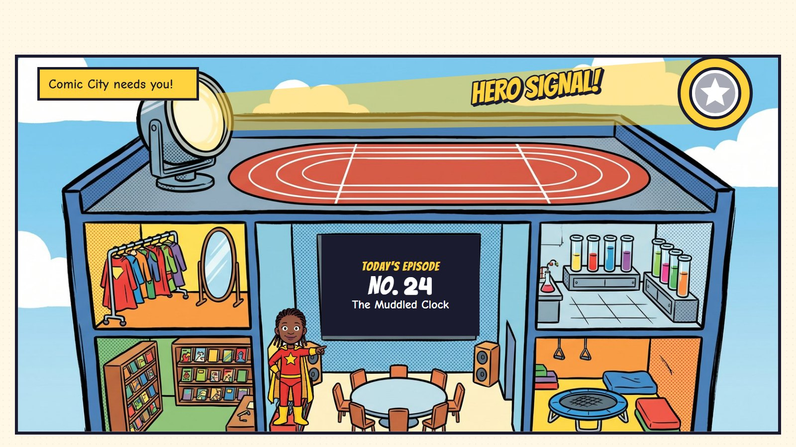
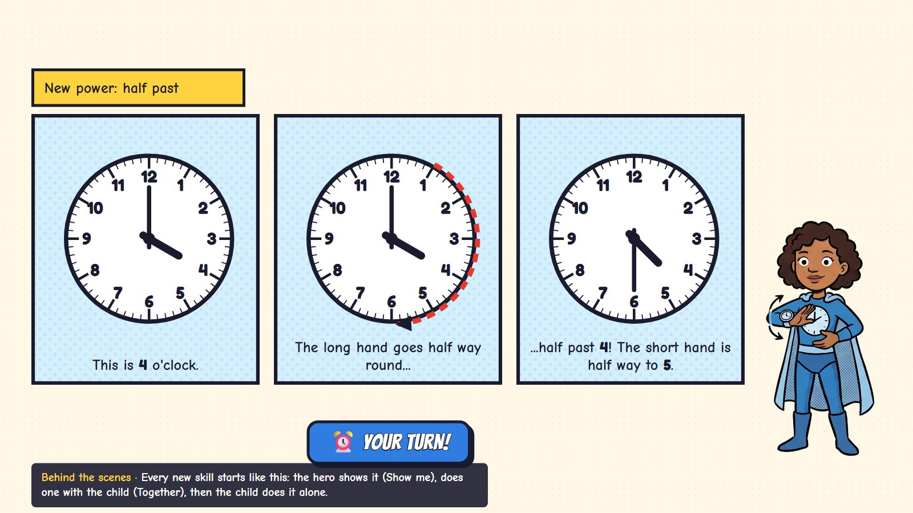
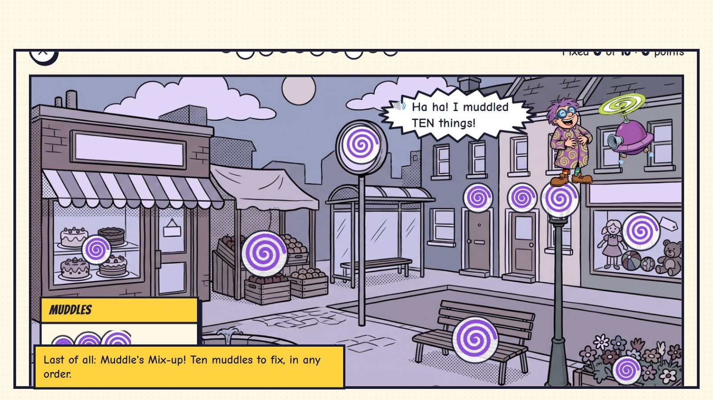
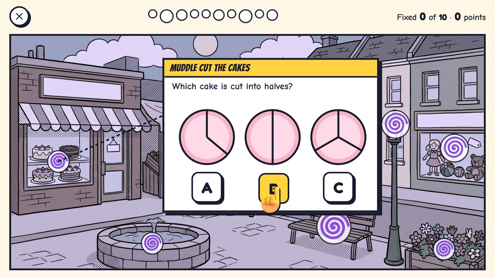
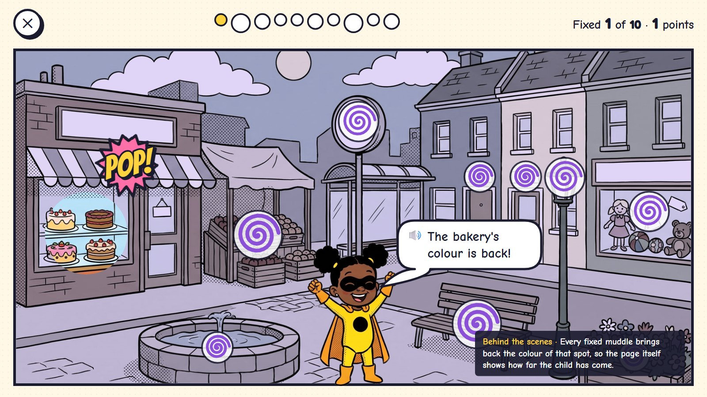
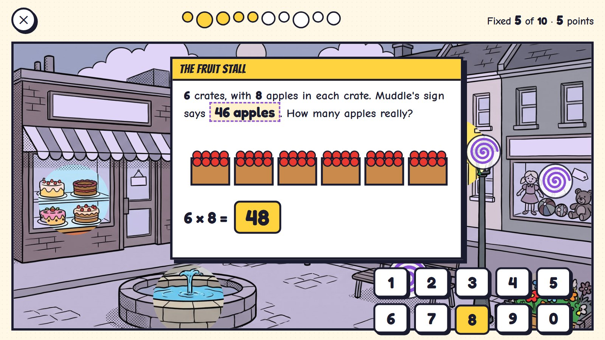
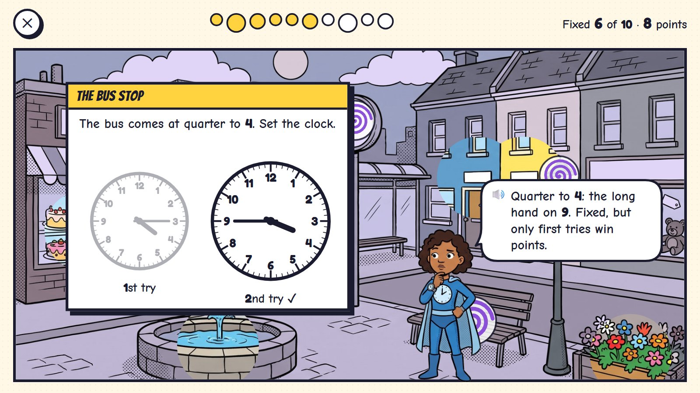
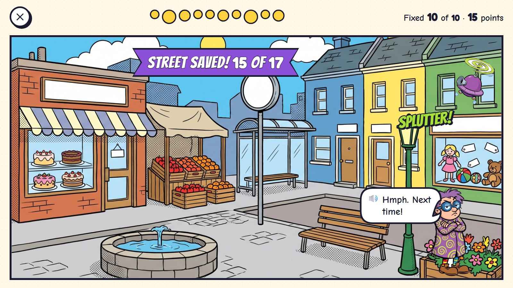

A day: today's episode
Every day is an episode of the child's own comic. The Hero Signal lights up, three calls for help appear on the city map, and the child answers them in any order. Each is a mission: one short activity. The episode ends with Muddle's Mix-up, the day's challenge: ten things to fix on one big page. The finished episode becomes an issue with the child's hero on its cover.
One episode, six moments

1The Hero Signal
Headquarters, a building cut open like a doll's house. The searchlight on the roof throws the child's own emblem into the sky; the big screen shows today's episode, No. 24, "The Muddled Clock".
The child's hero (their avatar) stands in the big room. Every room is a door: the costumes, the comic shelf, the lab, training, speed on the roof.

2Three calls for help
The city map: three calls for help today (kittens up a tree, the clock, kites on the roofs). The child picks the order. The strip at the top is today's page: the warm-up is already done.
The app chooses the three missions (one to remember, one new power, one to practise); the child chooses the order.

3A new power
Before a new skill, its hero shows it in three panels: "This is 4 o'clock", "the long hand goes half way round", "half past 4!". Then: your turn.
Every new skill starts like this: the hero shows it, does one with the child, then the child does it alone.

4The page colours in
Today's page: finished missions are in full colour, the one being played is inked, the rest are still pencil sketches.
🔊 Two missions done. One to go!
Pencil, ink, colour: the page itself shows how far the day has come, without numbers or scores.

5Muddle's Mix-up
Last of all, the day's challenge: one big page of a street with ten things Muddle mixed up (its own storyboard below).

6Issue 24
The finished episode becomes a comic issue with the child's own hero on the cover, the day's title and its stars, and goes on the comic shelf. A dark panel teases the next issue.
A missed day is just a day without an issue; nothing is lost and there is no streak to break.
Four parts, about ten minutes
| Part | What happens |
|---|---|
| 1 · Warm-up | Zip's Speed Training: a rooftop run with facts the child already knows. Ages 3–4 get Flash Dots, a quick look. It can be skipped. |
| 2 · Three missions | Three calls for help on the city map, in any order: one skill to remember, one new power (shown first), one to practise. Each is one activity, five rounds, about two minutes. |
| 3 · Muddle's Mix-up | Ten muddles on one page, in any order: the day's challenge. |
| 4 · The issue | The episode goes on the comic shelf as a dated issue with the child's hero on the cover. |
| Age | Warm-up | Each mission | Muddle's Mix-up | The day |
|---|---|---|---|---|
| 3–4 | Flash Dots, 1 min | 1.5 min | two halves of five, 1.5 min each | about 9 min |
| 5–7 | 10 facts, no clock | 2 min | 10 muddles, 4 min (age 5: two halves) | about 11 min |
| 8–10 | 60 seconds (the timer can be hidden) | 2–2.5 min | 10 muddles, 5 min | about 13 min |
These are guesses to check with children, not deadlines. The child can stop any time; a half-done question waits exactly as it was.
Muddle's Mix-up
Muddle is a harmless rascal with a flying mixer. Every day he muddles ten things in one part of the city: the cakes are cut wrong, the bus-stop clock is wrong, a shop sign has the wrong number. The child fixes them in any order, and each fixed spot gets its colour back.

1Ten muddles
One big splash page of a street, washed in Muddle's purple. Ten swirls mark ten things he muddled. Muddle laughs from the rooftop.
🔊 Ha ha! I muddled TEN things!
Small swirls are worth 1 point, middle 2, big 3: 17 in all. The ten are fixed in any order.

2Tap a swirl
The bakery's swirl opens its question in a panel that pops out of the page: which cake is cut into halves?
Each muddle is one question from what the child has learned, in a picture that belongs to that spot of the street.

3Colour comes back
Fixed: the bakery gets its colour back. One point.
🔊 The bakery's colour is back!
Every fixed muddle brings back the colour of its spot, so the page shows the progress.

4A big one
The fruit stall (3 points, a word problem): 6 crates with 8 apples in each, but Muddle's sign says 46. The child types 48.
A word problem is always among the big swirls.

5A second try
The bus-stop clock (2 points): quarter to 4. The first try (quarter past 4) stays faded beside the fixed clock.
🔊 Quarter to 4: the long hand on 9. Fixed, but only first tries win points.
Two tries; only a first try scores, and the muddle is fixed either way.

6Street saved
All ten fixed: the street in full colour, 15 points of 17. Muddle sulks, his mixer splutters.
🔊 Hmph. Next time!
This page becomes the last page of the day's issue.
🧮 What is asked
Only things the child has learned. Small swirls are worth 1 point, middle 2, big 3: 17 in all. Two tries; only the first try scores. A word problem is always among the big swirls.
🗺️ Any order
The child picks which muddle to fix next. Small ones first or the big ones first: both are fine, and the page shows what is left.
🦹 Never scary
Muddle never fights and is never beaten up. His muddles are silly (a sign with the wrong number, a cake cut unfairly), and when everything is fixed he sulks, then laughs: "Next time!"
📅 No streaks
A missed day is just a day without an issue. Nothing expires, nothing is taken away, and there is no streak to break or to buy back.
Questions about the day
- The day as an episode with three calls for help in any order (here), or the first plan's one road of stops in a fixed order?
- Muddle's Mix-up as the daily challenge: ten muddles on one page in any order. Does it feel right, and is Muddle a good rascal?
- The issue with the child's hero on the cover as the daily keepsake: the right reward?